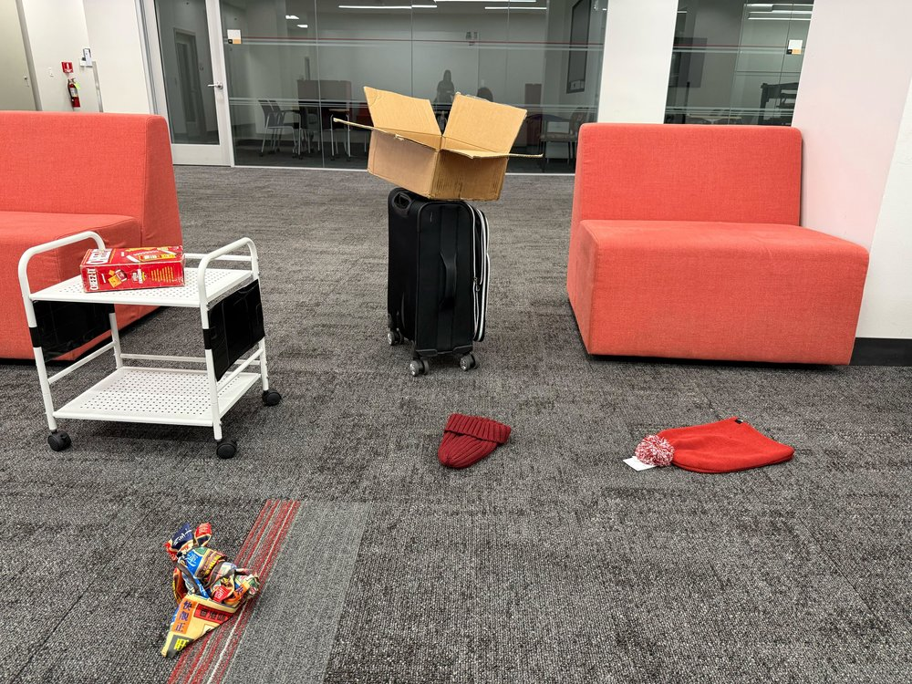
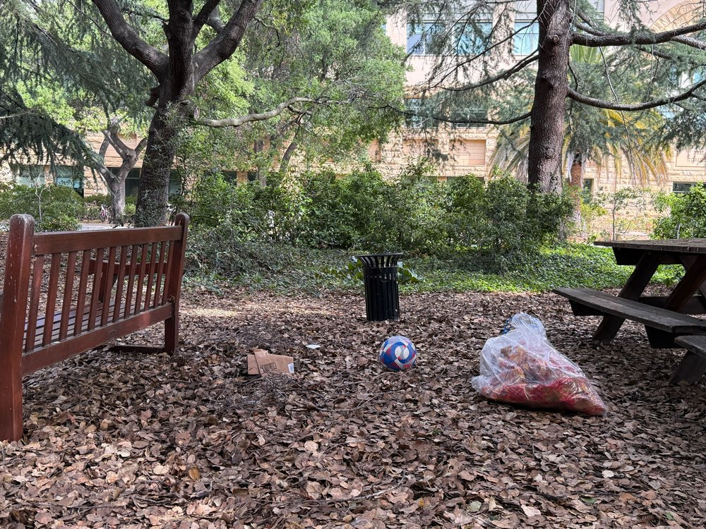
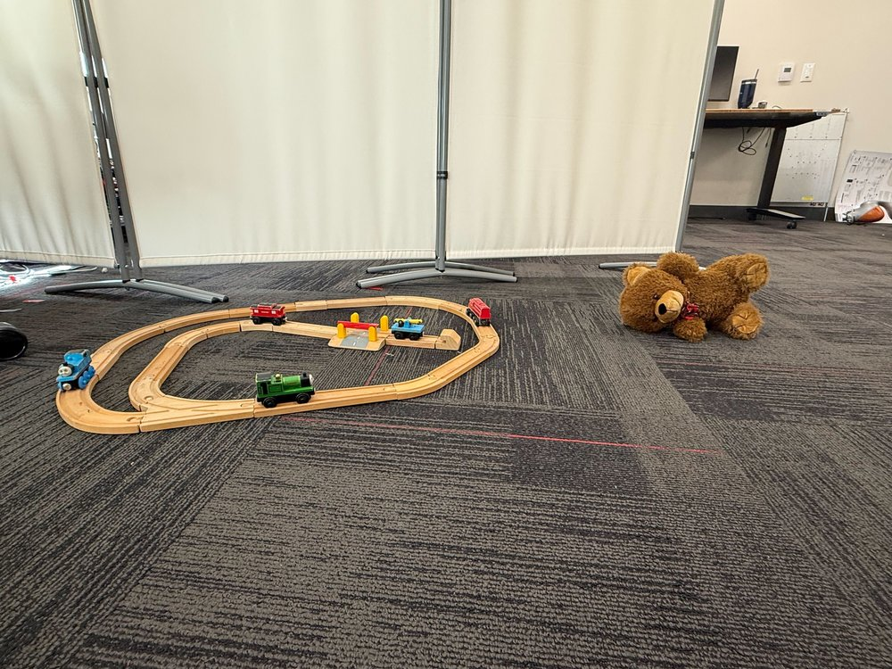
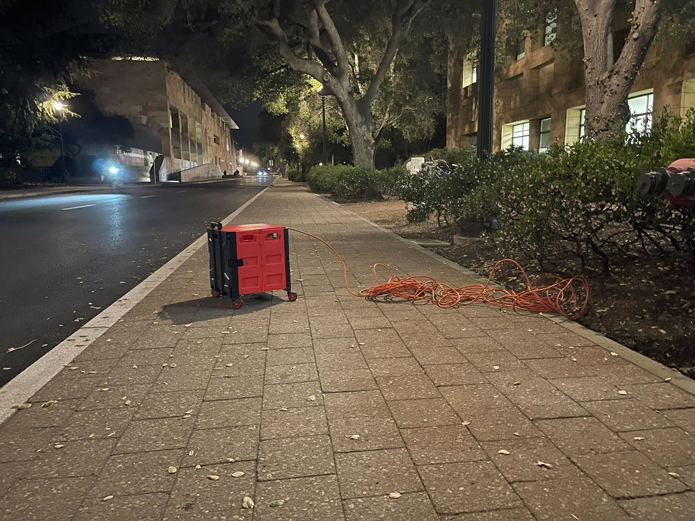
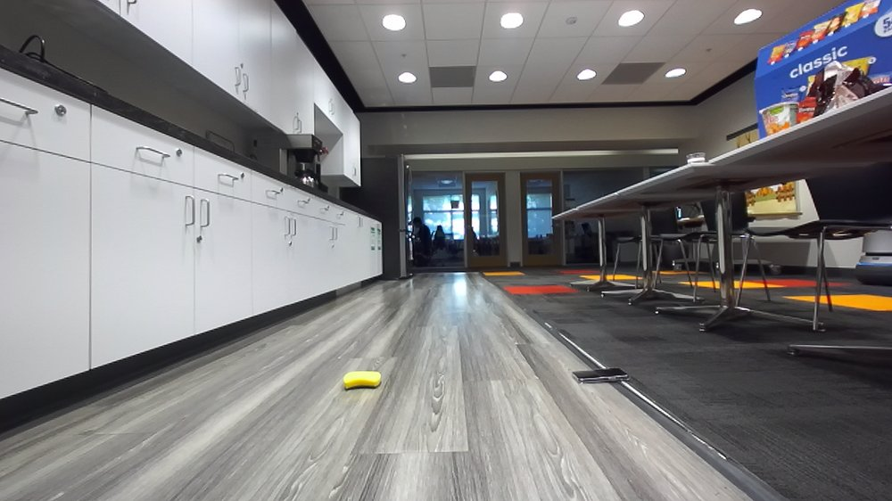
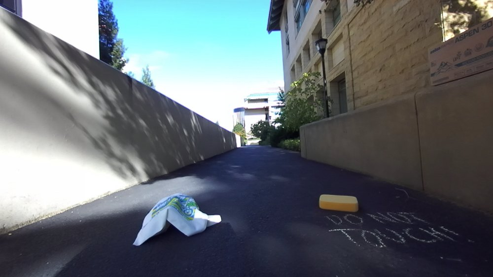
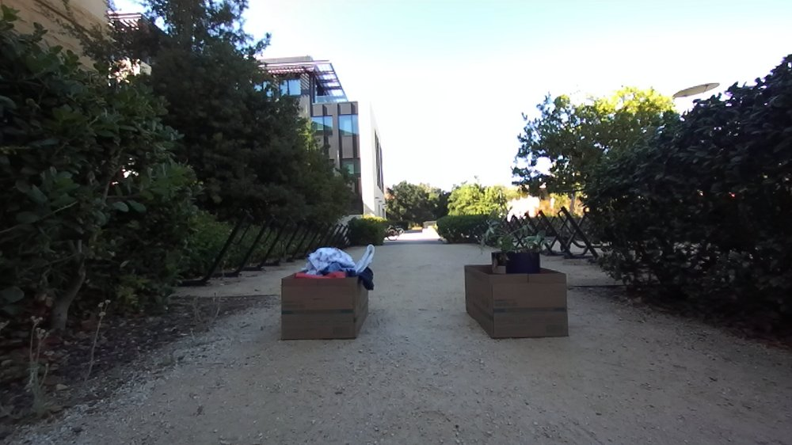
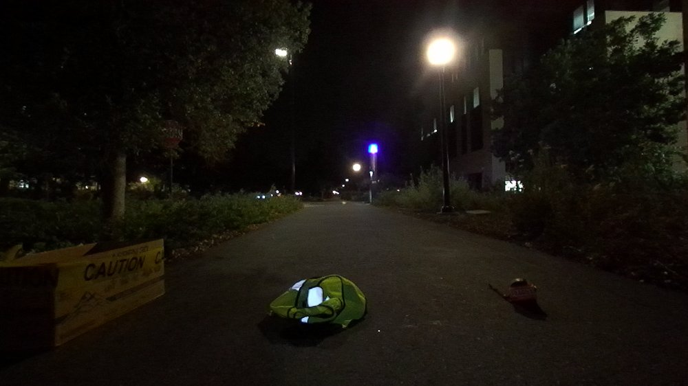

Results
Affordance reasoning
We first evaluate affordance reasoning in isolation from the full framework. Given an RGB image containing one or more obstacles, the task is to classify each obstacle as interactive (it can be swiped or picked up by our robot) or non-interactive (it must be avoided). We collect and manually annotate a benchmark of 100 real-world scenes totalling 217 objects across 14 locations. It spans 69% indoor and 31% outdoor scenes; bright artificial (66%), natural (28%), and dim (6%) lighting; 1–4 foreground objects per scene; and obstacle sizes from small electronics to large trees. Of the 217 objects, 94 (43.3%) are interactive and 123 (56.7%) are non-interactive. Labels were annotated by an expert familiar with the robot's physical capabilities, and the set is used only for evaluation, never for training or finetuning.
| Method | Accuracy (%) ↑ |
|---|---|
| MessyNav | 82.9 |
| height-only [5] | 59.9 |
| closed-set [4] | 24.4 |
| closed-set-oracle [4] | 64.5 |
Table 1: Affordance accuracy. MessyNav outperforms all baselines. Even closed-set-oracle, an upper bound whose categories are drawn from the evaluation set itself, underperforms MessyNav. Takeaway: predefined category-level labels are insufficient for context-dependent affordance reasoning.








Example scenes from the benchmark. Hover over an image to reveal the annotated evaluation view: each object is boxed and labeled with its affordance ([I] interactive, highlighted green; [N] non-interactive, highlighted blue).
Real-world interactive navigation
We then evaluate full end-to-end execution on a real robot across 15 real-world scenes in two environments, a messy bedroom and a conference room, with 5 object types and 3–7 context variations, for a total of 60 robot trials across the four methods. Success rate is the percentage of trials where the robot reaches the goal without executing unsafe actions. We deploy MessyNav on a TidyBot++ platform: a 7-DoF Kinova arm on a holonomic mobile base, with a Unitree L2 LiDAR and two ZED 2 cameras.
| Method | Success (%) ↑ | Exec. time (s) ↓ |
|---|---|---|
| MessyNav | 67 (10/15) | 45.8 |
| height-only [5] | 13 (2/15) | 24.5 |
| vlm-planner-only | 40 (6/15) | 45.9 |
| closed-set-planner [4] | 27 (4/15) | 50.4 |
Table 2: Real-world interactive navigation. Execution time excludes VLM queries and is averaged over successful trials. The two ablations isolate our core design decision: removing the affordance reasoner (vlm-planner-only) drops success from 67% to 40%, and replacing it with fixed category-level labels (closed-set-planner) drops it further to 27%. Takeaway: inaccurate prior affordances are worse than none at all.
Scaled offline evaluation
To quantify VLM variability and isolate high-level decision quality from low-level execution failures, we additionally evaluate MessyNav and the strongest baseline offline over 15 repeated trials across 55 scenes in 5 environments (n = 825 per method), assuming perfect low-level execution.
| Setting | MessyNav (%) ↑ | vlm-planner-only (%) |
|---|---|---|
| Overall | 62.4 | 55.4 |
| Outdoor, daytime | 78.3 | 60.8 |
| Indoor, well-lit | 62.8 | 55.5 |
| Nighttime | 29.2 | 44.2 |
Table 3: Scaled offline evaluation. MessyNav improves overall success by +7.0 pp and wins in 13 of 15 runs, a statistically significant gain under a paired t-test over per-run success rates (paired t(14) = 4.71, p < 0.001; 95% CI on the difference [+3.8, +10.2] pp). Gains are largest outdoors in daylight. Nighttime remains challenging for both methods and is the one setting where MessyNav trails the baseline, highlighting robustness under degraded visual conditions as important future work.




Example scenes from the offline evaluation. Egocentric robot views drawn from the 55 scenes across 5 environments, spanning indoor spaces, outdoor paths in daylight, and outdoor walkways at night.